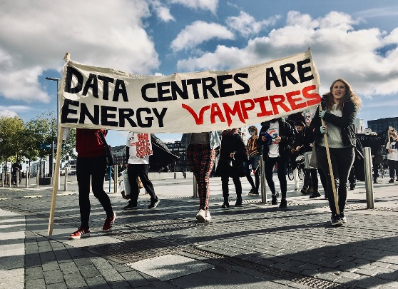
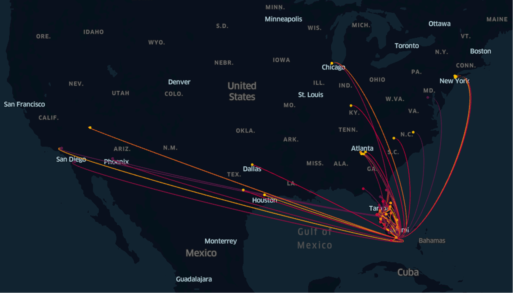
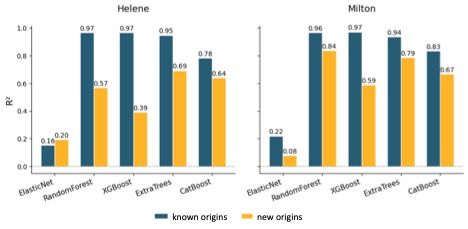
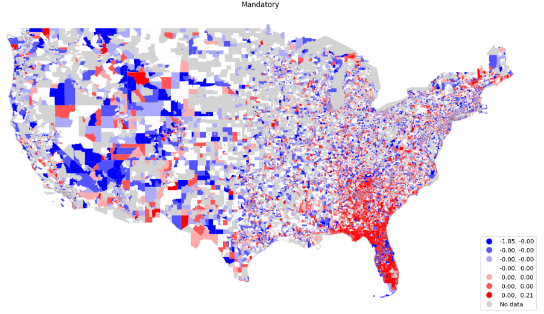
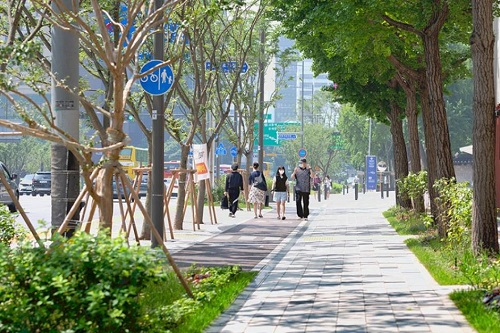
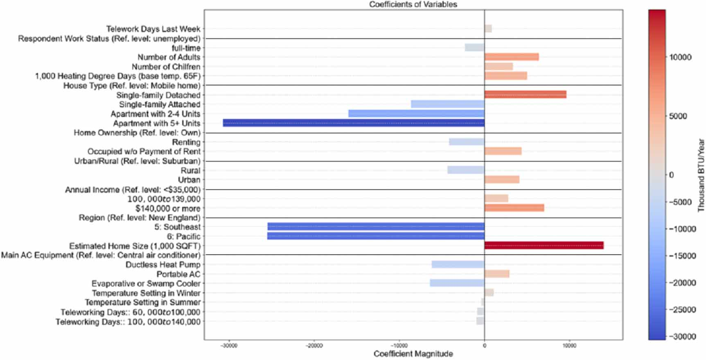
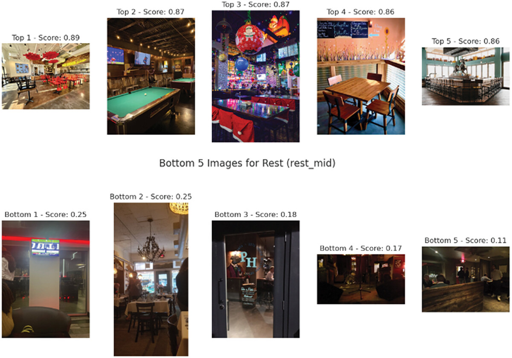
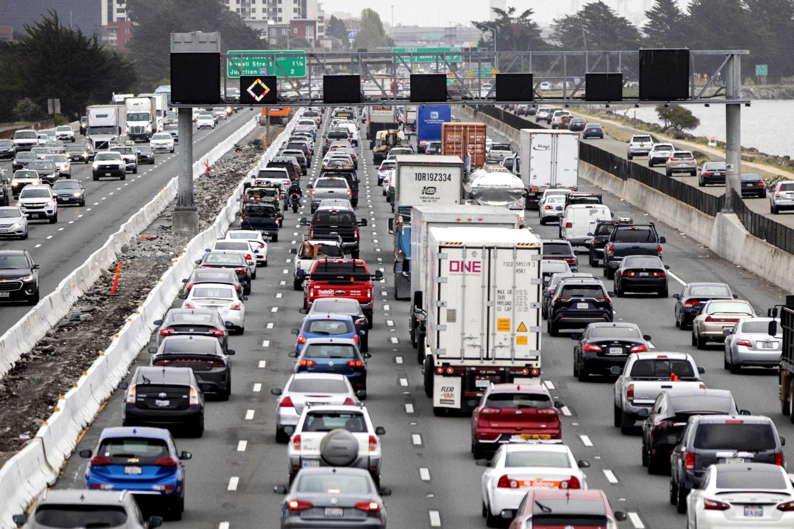
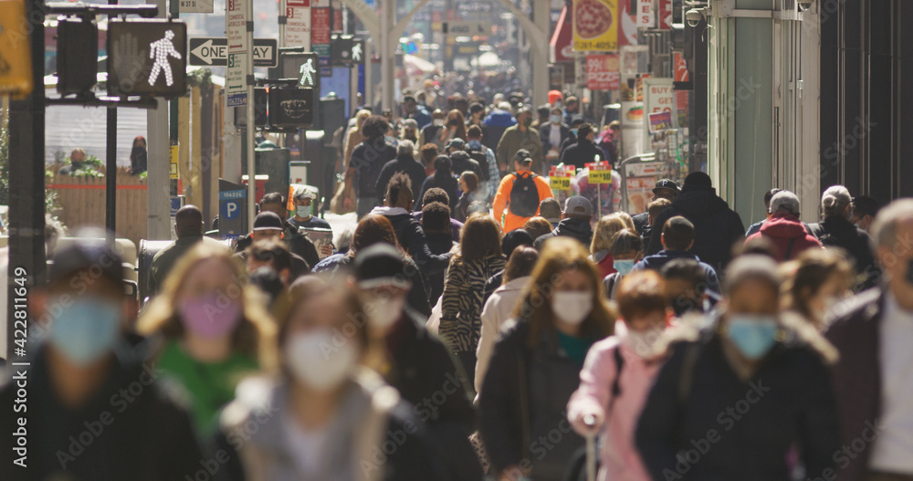
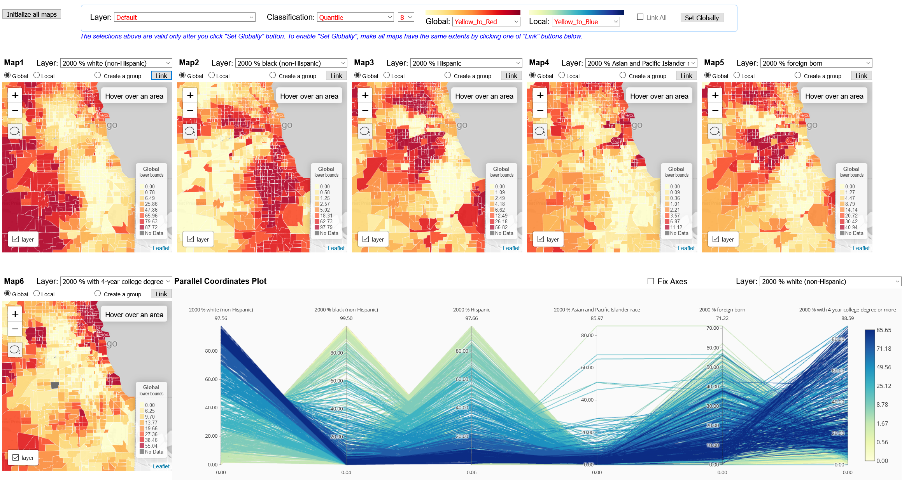

Chaeyeon ("Che-Yon") Han is a doctoral student at the Georgia Tech School of City and Regional Planning. She is a graduate research assistant at the Center for Urban Resilience and Analytics. She earned a Master’s degree in Urban Planning (2022) from the University of Illinois at Urbana-Champaign, and a B.S.E. in Computer Science and Engineering (2020) from Yonsei University, South Korea.
Research Interests: Urban/Geo AI, Urban Data Science, Urban Analytics, Data Visualization, CyberGIS, Human Mobility Analytics, Disaster Resilience, Climate Displacement and Migration, and VR/AR (Virtual Reality/Augmented Reality) applications.
Curriculum Vitae: Download 🎓 Google Scholar ✉️ chan303@gatech.edu

How the arrival of large-scale data centers relates to local migration and housing prices.
Estimating how the arrival of large-scale data centers relates to local migration rates and housing prices, using consumer address histories and housing transaction data. With Eunjee Son (Georgia Tech).
Ongoing
Image source: Climate Camp Ireland

Tracing how hurricane evacuations turn into longer-term relocations.
Dissertation research using individual address-to-address migration histories to trace how Hurricanes Helene and Milton turned evacuations into longer-term relocations, testing whether social ties and socioeconomic homophily explain where climate migrants settle.
Paper under review · ACSP 2026 presentation (Pittsburgh)

Do evacuation destination choice models transfer from one hurricane to the next?
Tests whether evacuation destination choice models transfer across three hurricane events, using mobile GPS-derived (Advan) foot traffic data and explainable AI to identify what drives destination choice, with a focus on social ties.
Paper under review · AAG 2026 and Multiplied Displacement 2026 presentations

Where Florida residents evacuated in Georgia during Hurricane Milton, and why.
Used mobile GPS-derived (Advan) visitation data and quantile regression to trace where Florida residents evacuated in Georgia during Hurricane Milton. Social ties drew evacuees to destinations, while distance from urban centers and proximity to airports discouraged them.
Publication (International Journal of Disaster Risk Reduction, 2026)
Projecting the number and profile of climate migrants moving to Cincinnati.
Bibliometric review of climate migration indicators and forecast models, followed by projections of the number and profile of climate migrants moving to Cincinnati using public data (IRS SOI, ACS, PUMS, FEMA, NOAA). In collaboration with the City of Cincinnati and ICLEI.
Report with Karen Chapple, School of Cities, University of Toronto (2026)
Does the weather in a street view image bias how people perceive the street?
Examined weather-induced measurement bias in street view image perception scores across Los Angeles, Seattle and Portland, with guidance for valid perception analyses. With Donghwan Ki, Bon Woo Koo, Youjung Kim and Sungmin Lee.
Publication (Computers, Environment and Urban Systems, 2026)

How street liveliness and greenery relate to traffic accidents involving older adults in Seoul.
Analyzed how perceived street liveliness relates to traffic accidents involving older adults in Seoul, and how tree visibility moderates that relationship. With Donghwan Ki, Bon Woo Koo, Youjung Kim and Sungmin Lee.
Paper under review
Using low-cost microphones alongside cameras to detect pedestrians and predict foot traffic.
NSF-funded project (award 2203408) with Alexander Lerch testing how far low-cost microphones can be pushed to detect and count pedestrians.

How teleworking reshapes household energy use, at home and on the road.
NSF-funded project (award 2243100) with Subhrajit Guhathakurta, Eric Williams and Eric Hittinger linking telework, e-commerce, time use and energy.
Can ChatGPT score plans with a flood resilience scorecard?
Assessed ChatGPT as a plan evaluation tool, specifically for scoring plans with a flood resilience scorecard. With Donghwan Ki, Bon Woo Koo, Youjung Kim and Sungmin Lee.
Publication (Journal of Environmental Planning and Management, 2026)

Do streetscapes still matter for place satisfaction in car-dependent neighborhoods?
Assessed indoor aesthetics and streetscape safety with computer vision models, combining SafeGraph POI and sales data, Yelp text and images, and Google Street View to test whether streetscapes still matter in car-dependent neighborhoods. With Seung Jae Lieu.

Do Thanksgiving travel destinations foreshadow where people relocate after hurricanes?
Compared post-hurricane relocation destinations with Thanksgiving holiday travel patterns in the U.S., using SafeGraph weekly foot traffic data and Spearman rank correlation. With Uijeong Hwang.

How walkability relates to mental health outcomes.
Mediation analysis of how walkability relates to mental health outcomes, using SafeGraph visits to mental health facilities in Atlanta. With Bon Woo Koo and Uijeong Hwang.

A CyberGIS geovisualization tool for spatiotemporal dynamics in infectious disease data.
Participated in creating CyberGIS-Viz, a geovisualization tool for showing spatiotemporal dynamics in infectious disease datasets, alongside COVID-19 risk prediction (ARIMA, LSTM and Prophet) using Twitter-derived mobility. With Shaowen Wang and Su Han.
© Chaeyeon Han 2023-2026